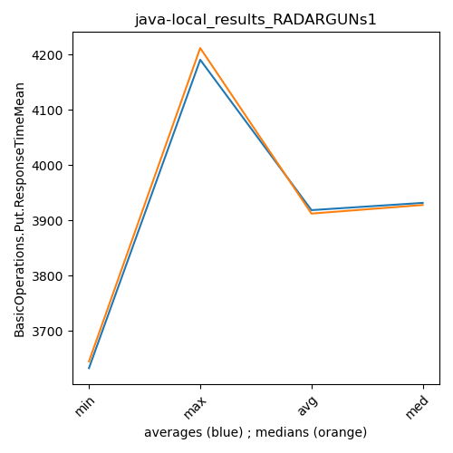

java- RADARGUNs1
Context at bottom
/home/jvanek/git/benchmarks-in-nested-virtualisation-toolchain/final_results/local_results/local_results_J2DBENCH
java-
RADARGUNs1
/home/jvanek/git/benchmarks-in-nested-virtualisation-toolchain/final_results/local_results/local_results_SPECJBB
java-
RADARGUNs1
/home/jvanek/git/benchmarks-in-nested-virtualisation-toolchain/final_results/local_results/local_results_RADARGUNs1
java-
RADARGUNs1
local_results_RADARGUNs1
- local_results_RADARGUNs1 - throughput get
- local_results_RADARGUNs1 - throughput put
- local_results_RADARGUNs1 - response mean time get
- local_results_RADARGUNs1 - response mean time put
local_results_RADARGUNs1 - throughput get
Expected number of java- JDKs: 37
1st avgmed_alljdks_metric:
/home/jvanek/git/benchmarks-in-nested-virtualisation-toolchain/final_results/result_processing.py /home/jvanek/git/benchmarks-in-nested-virtualisation-toolchain/final_results/local_results/local_results_RADARGUNs1 BasicOperations.Get.Throughput= False
values: [2923879, 2759139, 2901308, 3073927, 3108316, 3136807, 2971183, 3088055, 2834805, 3103744, 2846702, 2888759, 2941242, 2955666, 2979687, 3258495, 3272450, 2899416, 3028734, 3171715, 3173582, 3057807, 3237837, 3224131, 3269163, 3181661, 3294459, 3246675, 3222663, 3177262, 2794153, 3020976, 3229649, 2910026, 3213561, 3240966, 2976776, 3154108, 3028812, 3164314, 3276100, 3193267, 3198357, 3170534, 3205924, 3240256, 3179818, 3186187, 3184465, 3218505, 3197215, 3189717, 3221648, 3205515, 3302586, 3178774, 3178068, 3257091, 3308571, 3302653, 3275731, 3248289, 3353942, 3277173, 2924515, 3191047, 3190715, 3255429, 3127049, 2908298, 3323260, 3263113, 3200797, 3173633, 3263126, 3228067, 3279705, 3280092, 3258693, 3090098, 3303379, 3195557, 3206671, 3206786, 3292377, 3292778, 3194392, 3184439, 3320354, 2919894, 3218912, 3183081, 3242164, 3228166, 3295194, 2913544, 3214399, 3141478, 3242274, 3245305, 2844602, 3319646, 3332302, 3239356, 2835330, 3269766, 3190506, 3353186, 2821270, 2886224, 3291535, 2816537, 3272257, 2802128, 3289990, 2918258, 3322136, 3062112, 3288899, 3288422, 3357044, 3383685, 3332016, 3135079, 3261141, 3408677, 3357811, 3357412, 3297753, 3194148, 3203315, 3374653, 3159343, 3333485, 3427427, 3433805, 3467326, 3455342, 3388424, 3458974, 3495524, 3483114, 3156616, 3179438, 3459629, 3217557, 3427214, 3018942, 3136723, 3470174, 3460878, 3452814, 3479726, 3173753, 3198840, 3099523, 3190100, 3064212, 3131257, 3272934, 3424032, 3414964, 3302189, 3322538, 3102040, 3383394, 3293649, 3349287, 2976709, 2956977, 3085376, 3009432, 3001245, 3304502]

Expected number of iterations: 5
final number of values: 174 out of 185
Pass rate: 94.1%
values: (2759139, 3495524, 3191025.293103448, 3213561)

** accuracy from all jdks and runs
more is better
MIN: 2759139
MAX: 3495524
AVG: 3191025.293103448
MED: 3213561
Relative differences 1:
MIN-MAX: 21.0 %
MIN-AVG: 14.0 %
MIN-MED: 14.0 %
MAX-MIN: -27.0 %
MAX-AVG: -10.0 %
MAX-MED: -9.0 %
AVG-MED: 1.0 %
stored to java-.properties. sort | uniq that!
2nd avgmed_by_jdk_metric:
values: [2953313.8, 3026918.8, 2922411.2, 3126162.0, 3192504.0, 3224544.0, 2988701.0, 3122844.6, 3200514.4, 3199330.0, 3206520.0, 3245018.0, 3291557.6, 3137751.0, 3173820.2, 3261936.6, 3200498.2, 3256868.0, 3158443.4, 3161377.8, 3196242.2, 3094011.6, 3013736.2, 3176279.0, 3299249.2, 3336558.8, 3252988.8, 3434464.8, 3354733.2, 3252013.0, 3407469.0, 3136786.4, 3347331.4, 3221015.8, 3071506.4]

values: [2923879, 3088055, 2941242, 3171715, 3224131, 3222663, 3020976, 3154108, 3193267, 3186187, 3205515, 3257091, 3277173, 3190715, 3200797, 3263126, 3206671, 3292377, 3218912, 3214399, 3245305, 3190506, 2886224, 3288899, 3332016, 3357412, 3203315, 3433805, 3458974, 3217557, 3460878, 3131257, 3322538, 3293649, 3009432]

values: (2922411.2, 3434464.8, 3189869.1542857145, 3199330.0)
values: (2886224, 3460878, 3208136.1714285715, 3214399)

** accuracy from all jdks where runs were avged
more is better
MIN: 2922411.2
MAX: 3434464.8
AVG: 3189869.1542857145
MED: 3199330.0
Relative differences 1:
MIN-MAX: 15.0 %
MIN-AVG: 8.0 %
MIN-MED: 9.0 %
MAX-MIN: -18.0 %
MAX-AVG: -8.0 %
MAX-MED: -7.0 %
AVG-MED: 0.0 %
stored to java-.properties. sort | uniq that!
** accuracy from all jdks where runs were medianed
more is better
MIN: 2886224
MAX: 3460878
AVG: 3208136.1714285715
MED: 3214399
Relative differences 1:
MIN-MAX: 17.0 %
MIN-AVG: 10.0 %
MIN-MED: 10.0 %
MAX-MIN: -20.0 %
MAX-AVG: -8.0 %
MAX-MED: -8.0 %
AVG-MED: 0.0 %
stored to java-.properties. sort | uniq that!
local_results_RADARGUNs1 - throughput put
Expected number of java- JDKs: 37
1st avgmed_alljdks_metric:
/home/jvanek/git/benchmarks-in-nested-virtualisation-toolchain/final_results/result_processing.py /home/jvanek/git/benchmarks-in-nested-virtualisation-toolchain/final_results/local_results/local_results_RADARGUNs1 BasicOperations.Put.Throughput= False
values: [730968, 689797, 725329, 768474, 777103, 784193, 742726, 772049, 708701, 775970, 711723, 722266, 735328, 738894, 744929, 814574, 818065, 724802, 757200, 792972, 793416, 764409, 809458, 806079, 817255, 795363, 823633, 811655, 805698, 794350, 698527, 755267, 807401, 727540, 803423, 810324, 744171, 788542, 757161, 791099, 819004, 798340, 799595, 792665, 801533, 809982, 794936, 796588, 796144, 804615, 799262, 797398, 805444, 801384, 825599, 794747, 794540, 814230, 827131, 825594, 818963, 811995, 838532, 819282, 731140, 797760, 797706, 813813, 781758, 727048, 830777, 815792, 800222, 793355, 815763, 807097, 819878, 819978, 814699, 772539, 825790, 798882, 801662, 801753, 823045, 823227, 798629, 796166, 830065, 729950, 804751, 795735, 810600, 807071, 823834, 728422, 803669, 785330, 810562, 811313, 711114, 829943, 833084, 809763, 708885, 817510, 797614, 838339, 705342, 721604, 822901, 704096, 818044, 700570, 822478, 729548, 830564, 765522, 822151, 822031, 839257, 845957, 833036, 783785, 815270, 852209, 839364, 839371, 824432, 798488, 800897, 843687, 789856, 833360, 856870, 858491, 866844, 863835, 847150, 864756, 873889, 870746, 789122, 794942, 864935, 804356, 856839, 754687, 784233, 867570, 865255, 863220, 869916, 793477, 799745, 774814, 797492, 766044, 782787, 818295, 856031, 853676, 825521, 830592, 775501, 845886, 823383, 837254, 744165, 739227, 771339, 752370, 750357, 826138]

Expected number of iterations: 5
final number of values: 174 out of 185
Pass rate: 94.1%
values: (689797, 873889, 797758.275862069, 803423)

** accuracy from all jdks and runs
more is better
MIN: 689797
MAX: 873889
AVG: 797758.275862069
MED: 803423
Relative differences 1:
MIN-MAX: 21.0 %
MIN-AVG: 14.0 %
MIN-MED: 14.0 %
MAX-MIN: -27.0 %
MAX-AVG: -10.0 %
MAX-MED: -9.0 %
AVG-MED: 1.0 %
stored to java-.properties. sort | uniq that!
2nd avgmed_by_jdk_metric:
values: [738334.2, 756727.8, 730628.0, 781522.6, 798123.4, 806139.8, 747183.75, 780724.2, 800140.6, 799836.6, 801620.6, 811249.4, 822873.2, 784435.4, 793438.8, 815483.0, 800125.2, 814226.4, 789621.4, 790363.4, 799043.4, 773538.0, 753443.0, 794052.6, 824813.2, 834129.2, 813257.6, 858638.0, 838691.0, 813010.0, 851887.6, 784176.4, 836823.0, 805237.8, 767886.2]

values: [730968, 772049, 735328, 792972, 806079, 805698, 755267, 788542, 798340, 796588, 801384, 814230, 819282, 797706, 800222, 815763, 801662, 823045, 804751, 803669, 811313, 797614, 721604, 822151, 833036, 839364, 800897, 858491, 864756, 804356, 865255, 782787, 830592, 823383, 752370]

values: (730628.0, 858638.0, 797469.2785714286, 799836.6)
values: (721604, 865255, 802043.2571428572, 803669)
** accuracy from all jdks where runs were avged
more is better
MIN: 730628.0
MAX: 858638.0
AVG: 797469.2785714286
MED: 799836.6
Relative differences 1:
MIN-MAX: 15.0 %
MIN-AVG: 8.0 %
MIN-MED: 9.0 %
MAX-MIN: -18.0 %
MAX-AVG: -8.0 %
MAX-MED: -7.0 %
AVG-MED: 0.0 %
stored to java-.properties. sort | uniq that!
** accuracy from all jdks where runs were medianed
more is better
MIN: 721604
MAX: 865255
AVG: 802043.2571428572
MED: 803669
Relative differences 1:
MIN-MAX: 17.0 %
MIN-AVG: 10.0 %
MIN-MED: 10.0 %
MAX-MIN: -20.0 %
MAX-AVG: -8.0 %
MAX-MED: -8.0 %
AVG-MED: 0.0 %
stored to java-.properties. sort | uniq that!
local_results_RADARGUNs1 - response mean time get
Expected number of java- JDKs: 37
1st avgmed_alljdks_metric:
/home/jvanek/git/benchmarks-in-nested-virtualisation-toolchain/final_results/result_processing.py /home/jvanek/git/benchmarks-in-nested-virtualisation-toolchain/final_results/local_results/local_results_RADARGUNs1 BasicOperations.Get.ResponseTimeMean True
values: [1162, 1071, 1123, 1124, 1090, 1100, 1090, 1239, 1150, 1157, 1121, 1094, 1098, 1245, 1163, 1149, 1121, 1113, 1192, 1201, 1227, 1187, 1165, 1185, 1163, 1239, 1104, 1112, 1154, 1142, 1137, 1134, 1128, 1325, 1123, 1111, 1267, 1140, 1107, 1166, 1099, 1139, 1115, 1134, 1092, 1102, 1129, 1108, 1127, 1112, 1107, 1127, 1146, 1125, 1107, 1176, 1132, 1128, 1094, 1098, 1099, 1096, 1084, 1101, 1125, 1146, 1146, 1102, 1119, 1156, 1083, 1084, 1099, 1119, 1113, 1083, 1130, 1148, 1120, 1146, 1083, 1114, 1155, 1107, 1105, 1105, 1166, 1092, 1098, 1111, 1146, 1137, 1116, 1133, 1113, 1078, 1145, 1136, 1178, 1150, 1086, 1070, 1096, 1079, 1082, 1109, 1090, 1097, 1102, 1088, 1126, 1116, 1123, 1149, 1116, 1127, 1095, 1084, 1136, 1060, 1081, 1049, 1070, 1053, 1092, 1025, 1031, 1057, 1092, 1064, 1055, 1066, 1077, 1082, 1023, 1026, 1003, 1003, 1032, 1070, 1038, 1049, 1066, 1052, 1068, 1092, 1093, 1130, 1106, 1048, 1041, 1063, 1046, 1062, 1043, 1082, 1051, 1080, 1090, 1115, 1080, 1084, 1070, 1094, 1122, 1066, 1104, 1108, 1130, 1134, 1122, 1111, 1111, 1128]

Expected number of iterations: 5
final number of values: 174 out of 185
Pass rate: 94.1%
values: (1003, 1325, 1110.5977011494253, 1108)

** accuracy from all jdks and runs
more is worse
MIN: 1325
MAX: 1003
AVG: 1110.5977011494253
MED: 1108
Relative differences 1:
MIN-MAX: 32.0 %
MIN-AVG: 19.0 %
MIN-MED: 20.0 %
MAX-MIN: -24.0 %
MAX-AVG: -10.0 %
MAX-MED: -9.0 %
AVG-MED: 0.0 %
stored to java-.properties. sort | uniq that!
2nd avgmed_by_jdk_metric:
values: [1114.0, 1147.2, 1144.2, 1155.2, 1185.4, 1150.2, 1181.0, 1149.6, 1130.6, 1111.6, 1123.4, 1127.4, 1095.6, 1127.6, 1108.2, 1118.8, 1121.0, 1113.2, 1128.6, 1130.0, 1096.2, 1096.0, 1120.4, 1111.6, 1062.6, 1059.4, 1068.8, 1017.4, 1055.0, 1097.8, 1052.0, 1069.2, 1088.6, 1106.0, 1121.2]

values: [1123, 1150, 1121, 1149, 1185, 1142, 1137, 1123, 1134, 1108, 1125, 1128, 1098, 1125, 1099, 1120, 1114, 1105, 1133, 1136, 1086, 1097, 1123, 1116, 1060, 1057, 1066, 1023, 1052, 1093, 1048, 1080, 1084, 1108, 1122]

values: (1017.4, 1185.4, 1111.0, 1114.0)
values: (1023, 1185, 1107.7142857142858, 1116)

** accuracy from all jdks where runs were avged
more is worse
MIN: 1185.4
MAX: 1017.4
AVG: 1111.0
MED: 1114.0
Relative differences 1:
MIN-MAX: 17.0 %
MIN-AVG: 7.0 %
MIN-MED: 6.0 %
MAX-MIN: -14.0 %
MAX-AVG: -8.0 %
MAX-MED: -9.0 %
AVG-MED: -0.0 %
stored to java-.properties. sort | uniq that!
** accuracy from all jdks where runs were medianed
more is worse
MIN: 1185
MAX: 1023
AVG: 1107.7142857142858
MED: 1116
Relative differences 1:
MIN-MAX: 16.0 %
MIN-AVG: 7.0 %
MIN-MED: 6.0 %
MAX-MIN: -14.0 %
MAX-AVG: -8.0 %
MAX-MED: -8.0 %
AVG-MED: -1.0 %
stored to java-.properties. sort | uniq that!
local_results_RADARGUNs1 - response mean time put
Expected number of java- JDKs: 37
1st avgmed_alljdks_metric:
/home/jvanek/git/benchmarks-in-nested-virtualisation-toolchain/final_results/result_processing.py /home/jvanek/git/benchmarks-in-nested-virtualisation-toolchain/final_results/local_results/local_results_RADARGUNs1 BasicOperations.Put.ResponseTimeMean True
values: [4098, 3978, 4027, 4019, 3970, 3981, 3948, 3934, 4035, 4153, 4131, 3949, 3982, 4064, 3955, 4031, 4050, 4136, 3952, 4098, 4057, 4099, 4132, 4084, 4038, 4040, 3979, 4121, 4162, 4175, 4149, 4249, 4153, 4212, 4267, 4117, 3999, 4067, 4052, 4111, 3985, 4099, 3914, 3976, 4034, 4124, 4011, 3965, 4025, 3945, 3999, 4031, 3963, 4212, 3895, 3970, 4028, 3958, 3832, 3829, 3990, 3783, 3826, 3908, 3973, 3922, 4120, 3877, 4162, 3882, 3854, 3947, 3835, 4050, 3902, 4043, 3898, 3825, 3991, 3972, 3972, 3972, 3967, 3855, 3792, 3928, 4033, 4108, 3881, 3968, 4128, 4026, 3951, 4001, 3894, 3755, 3792, 3824, 3772, 3731, 3750, 3866, 3761, 4279, 3619, 3774, 3746, 3704, 3758, 3690, 3674, 3783, 3795, 3799, 3793, 3677, 3745, 3690, 3892, 3813, 3802, 3703, 3877, 3711, 3778, 3681, 3748, 3708, 3761, 3684, 3697, 3759, 3759, 3811, 3585, 3675, 3645, 3576, 3683, 3837, 3836, 3881, 3799, 3793, 3863, 3823, 3838, 3749, 3851, 3853, 3811, 3800, 3798, 3861, 3715, 3866, 3791, 3796, 3749, 3882, 3948, 3963, 3944, 3814, 3913, 3921, 3923, 3900, 3909, 4051, 4077, 4019, 3951, 4142]

Expected number of iterations: 5
final number of values: 174 out of 185
Pass rate: 94.1%
values: (3576, 4279, 3917.109195402299, 3922)

** accuracy from all jdks and runs
more is worse
MIN: 4279
MAX: 3576
AVG: 3917.109195402299
MED: 3922
Relative differences 1:
MIN-MAX: 20.0 %
MIN-AVG: 9.0 %
MIN-MED: 9.0 %
MAX-MIN: -16.0 %
MAX-AVG: -9.0 %
MAX-MED: -9.0 %
AVG-MED: -0.0 %
stored to java-.properties. sort | uniq that!
2nd avgmed_by_jdk_metric:
values: [4018.4, 4010.2, 4016.2, 4053.4, 4082.0, 4095.4, 4190.75, 4100.4, 4017.0, 4031.8, 4030.0, 3936.6, 3867.2, 4010.8, 3913.6, 3931.8, 3947.6, 3948.4, 4014.8, 3807.4, 3877.4, 3720.2, 3748.2, 3759.4, 3781.2, 3735.2, 3742.0, 3632.8, 3829.2, 3824.8, 3824.6, 3783.4, 3910.2, 3913.2, 4048.0]

values: [4019, 3981, 3982, 4050, 4084, 4121, 4212, 4067, 3985, 4025, 3999, 3958, 3829, 3973, 3882, 3902, 3972, 3928, 4001, 3792, 3761, 3746, 3783, 3745, 3802, 3748, 3759, 3645, 3836, 3838, 3811, 3791, 3944, 3913, 4051]

values: (3632.8, 4190.75, 3918.6728571428566, 3931.8)
values: (3645, 4212, 3912.4285714285716, 3928)

** accuracy from all jdks where runs were avged
more is worse
MIN: 4190.75
MAX: 3632.8
AVG: 3918.6728571428566
MED: 3931.8
Relative differences 1:
MIN-MAX: 15.0 %
MIN-AVG: 7.0 %
MIN-MED: 7.0 %
MAX-MIN: -13.0 %
MAX-AVG: -7.0 %
MAX-MED: -8.0 %
AVG-MED: -0.0 %
stored to java-.properties. sort | uniq that!
** accuracy from all jdks where runs were medianed
more is worse
MIN: 4212
MAX: 3645
AVG: 3912.4285714285716
MED: 3928
Relative differences 1:
MIN-MAX: 16.0 %
MIN-AVG: 8.0 %
MIN-MED: 7.0 %
MAX-MIN: -13.0 %
MAX-AVG: -7.0 %
MAX-MED: -7.0 %
AVG-MED: -0.0 %
stored to java-.properties. sort | uniq that!
/home/jvanek/git/benchmarks-in-nested-virtualisation-toolchain/final_results/local_results/local_results_RADARGUNs3
java-
RADARGUNs1
/home/jvanek/git/benchmarks-in-nested-virtualisation-toolchain/final_results/local_results/local_results_JMH
java-
RADARGUNs1
/home/jvanek/git/benchmarks-in-nested-virtualisation-toolchain/final_results/local_results/local_results_DACAPO
java-
RADARGUNs1
pass rates:
local_results_RADARGUNs1=94.1%
Context:
- local_results
- RADARGUNs1